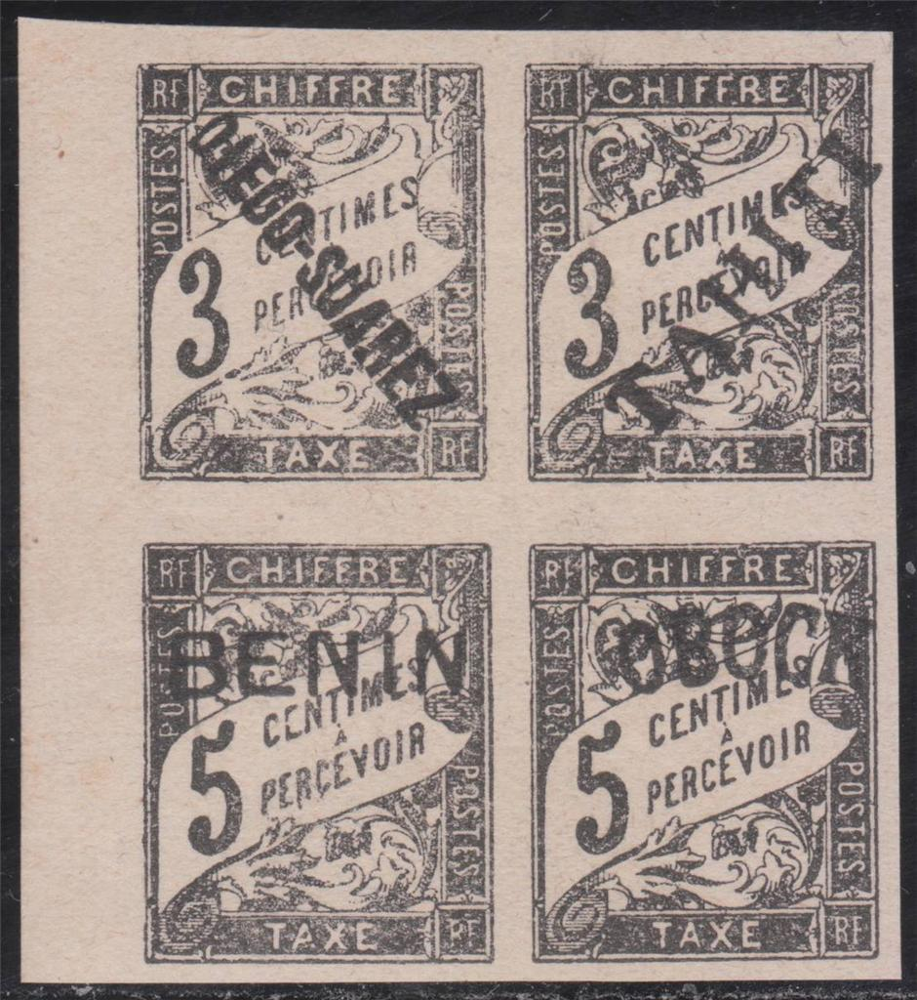
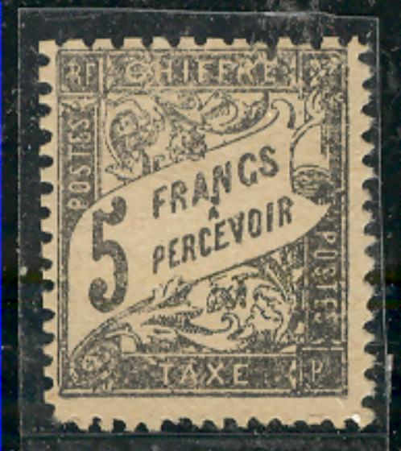
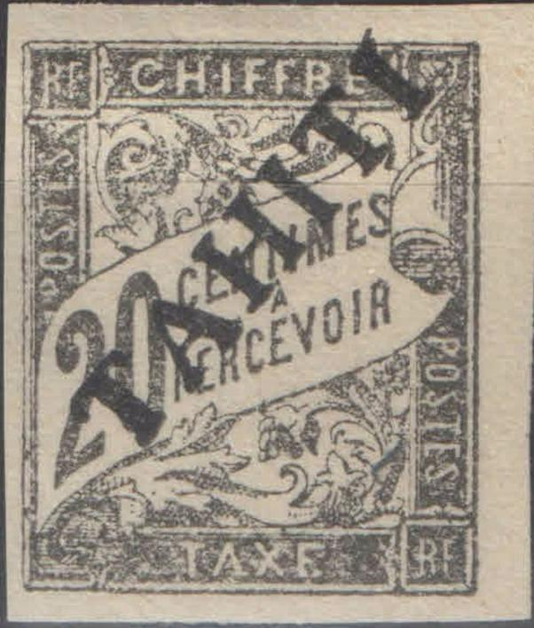
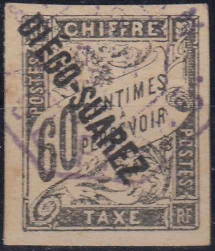

Presumably genuine stamps
Return To Catalogue - French colonies, postage due stamps - French colonies, postage due stamps, Fournier forgeries - France overview - French colonies - France Postage Due Stamps - France Postage Due Stamps, 1881 forgeries - France Postage Due Stamps, 1881 Fournier forgeries
Note: on my website many of the
pictures can not be seen! They are of course present in the
catalogue;
contact me if you want to purchase it.
Presumably genuine stamps
Fournier forgeries:
Click here for French colonies, postage due stamps, Fournier forgeries
  
Bogus block of four 3 c and 5 c stamps with forged "DIEGO
SUAREZ", "TAHITI", "BENIN" and
"OBOCK" overprints. The basic stamps are also forged.
The 5 c and 1 c forgeries next to it are likely made by the same
forger. The printing is quite blur for all these forgeries. Also
a pair of two stamps, one 40 c with a "TAHITI"
overprint and a 5 F printed on top of each other.
There might be two types of each of these
forgeries. In my view, these forgeries have the following
disinguishing characteristics (besides from being printed very
badly):
1 c: In the 1 c forgery, the upper part is badly done; especially
above the "H" of "CHIFFRE".
3 c: First type: break in the line below the "3".
4 c: The top right part of the "4" has an extension in
the genuine stamp, this is missing in this forgery.
5 c: There appear to be at least two types of the 5 c, in one of
the 5 c types there are some smudges below "PERC" and
the central bar of the first "E" of
"CENTIMES" is missing, which also appear in the left
stamp of the block of four.
15 c: In one of the types there is a hole in the inner frame
below the "I" of "CHIFFRE". The accent on the
"A" is missing. There is a scratch in the white space
on top of the bottom right "RF".
20 c: A vertical black line appears in the white line above the
"X" of "TAXE" (but not always?). The bottom
left part is very smudged.
This forgery type often appears with the blue "ANJOUAN COL
FRANC." cancel. It looks, as if these 1 c, 2 c, 3 c and 4 c
stamps were printed together?

I presume this 60 c forgery with "DIEGO SUAREZ"
overprint also belongs to the same set
French colonies, postage due stamps, more forgeries
{kind=link}
{kind=link}
{kind=link}
{kind=link}